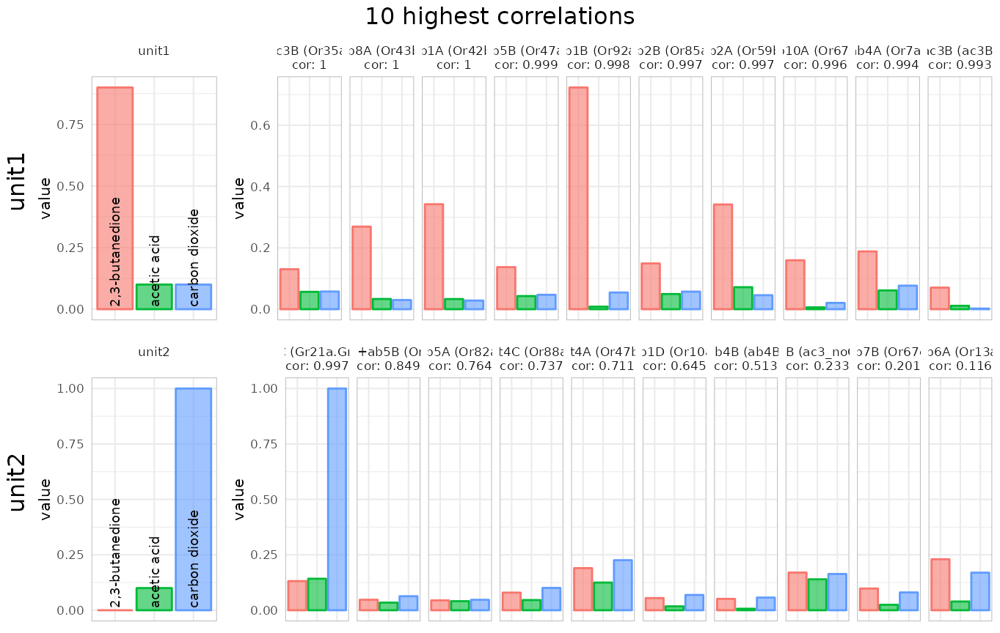

The DoOR.functions package provides tools for the analysis of the data provided by the DoOR.data package.
Loading data
First we need to load packages and data:
#load data
library(DoOR.functions)## Loading required package: DoOR.data##
## Welcome to DoOR.data
## Version: 2.0.1
## Released: 2017-03-07
##
## Please use load_door_data() to load all data into your workspace now.##
## Welcome to DoOR.functions
## Version: 2.0.2
## Released:
##
## Please note that all function names have been changed to 'snake_case'
## for consistency.
##
## Old 'camelCase' function names will stop working in one of the next
## versions.
library(DoOR.data)
load_door_data(nointeraction = TRUE)Identifying the sensillum we are recording from with identify_sensillum()
{#identify_sensillum} Imagine we perform an electrophysiological recording from a Drosophila sensillum (single sensillum recording, SSR) and we are not sure what sensillum we are recording from. In order to identify the sensillum we used several diagnostic odorants (maybe selected using private_odorant()) and got responses from the different sensory neurons the sensillum houses. We can now pass our recorded data to identify_sensillum().
Let’s make up some simple fake data. We pretend to have recorded with three odorants (2,3-butanedione, ethanoic acid and carbon dioxide) and we could separate the responses of two units. Unit1 responded strongly to 2,3-butanedione only, unit2 only responded to carbon dioxide. We create a data.frame that contains a column called odorants with the InChIKeys of our test odorants, and one column for each unit (name the colnames as you like, e.g. unit1-n or Aneuro if you are sure about the neuron).
recording <- data.frame(
odorants = c(trans_id(c("BEDN", "ETAS"), "Code"),
trans_id("carbon dioxide", "Name")),
unit1 = c(.9,.1,.1),
unit2 = c(0, .1, 1)
)Next we feed the recording to the function:
using correlations
identify_sensillum(recording, base_size = 8)## found correlations above 0.9 for all 2 units in: ab1 Note that the function tells us that it found hits for all units in ab1 and ab5, meaning that e.g. within the four neurons housed in the ab1 sensillum both of our units had good matches. You can set this correlation threshold with min.cor. If we increase the threshold to 0.99 only ab1 is returned as a double match:
identify_sensillum(recording, min.cor = .99)## found correlations above 0.99 for all 2 units in: ab1We can define the number of best hits that we want to get returned (the default is 10):
identify_sensillum(recording, nshow = 5, base_size = 8)## found correlations above 0.9 for all 2 units in: ab1And if we know e.g. that we are recording from a basiconic sensillum we can restrict the search to one or a few sensilla types:
identify_sensillum(recording, sub = "ab", nshow = 5, base_size = 8)## found correlations above 0.9 for all 2 units in: ab1
identify_sensillum(recording, sub = c("ac","at"), nshow = 5, base_size = 8)using Euclidean distances
Instead of correlations we can also use the Euclidean distance as a (dis)similarity measure:
identify_sensillum(recording, method = "dist", sub = "ab", nshow = 5,
base_size = 8)## Warning: Removed 2 rows containing missing values or values outside the scale range
## (`geom_bar()`).## Warning: Removed 1 row containing missing values or values outside the scale range
## (`geom_bar()`).returning data instead of plots
We can also return the correlation/distance data instead of the plot when setting plot =FALSE:
sensillumX <-
identify_sensillum(recording,
method = "dist",
sub = "ab",
plot = FALSE)
head(sensillumX)## receptor sensillum OSN unit1 unit2
## Or7a Or7a ab4 ab4A 0.7131111 0.9430477
## Or9a Or9a ab8 ab8B 0.5688357 1.0031663
## Or10a Or10a ab1 ab1D 0.8497591 0.9363670
## Or13a Or13a ab6 ab6A 0.6763409 0.8639653
## Or22a Or22a ab3 ab3A 0.6596756 0.9979447
## Or22b Or22b ab3 ab3A 0.1732051 1.7320508So apparently our fake recording came from the ab1 sensillum, which was admittedly quite obvious as we had a strong carbon dioxide response and ab1 houses the carbon dioxide receptor :)
Finding neuron-specific odorants with private_odorant()
There may be several cases where we might be interested in so called private odorants, odorants that specifically activate a given receptor or sensory neuron. Maybe we are looking for diagnostic odorants for sensillum identification or we want to activate a specific neuronal pathway, private_odorant() returns candidate odorants for that task.
Let’s say we want to specifically activate Or22a neurons:
private_odorant("Or22a")## Or22a max.others n difference
## GQKZRWSUJHVIPE-UHFFFAOYSA-N 0.43570150 -0.001626778 4 0.4373283
## SHZIWNPUGXLXDT-UHFFFAOYSA-N 0.78193674 0.417131636 29 0.3648051
## JGHZJRVDZXSNKQ-UHFFFAOYSA-N 0.52492990 0.243725635 28 0.2812043
## HCRBXQFHJMCTLF-UHFFFAOYSA-N 0.53683628 0.368857494 20 0.1679788
## SMQUZDBALVYZAC-UHFFFAOYSA-N 0.07433042 -0.075854326 1 0.1501847We might want to return the odorant names instead of InChiKeys:
private_odorant("Or22a", tag = "Name")## Or22a max.others n difference
## sec-amyl acetate 0.43570150 -0.001626778 4 0.4373283
## ethyl hexanoate 0.78193674 0.417131636 29 0.3648051
## methyl octanoate 0.52492990 0.243725635 28 0.2812043
## ethyl 2-methylbutanoate 0.53683628 0.368857494 20 0.1679788
## salicyl aldehyde 0.07433042 -0.075854326 1 0.1501847So according to the function sec-amyl acetate would be a good candidate. It activates Or22a at 0.4 (DoOR response, max is 1) while the maximum activation in all other tested responding units (receptors, neurons, glomeruli) is 0.016, a difference of 0.40. Sounds good, but it was tested only in 4 other responding units, so I would rather go for ethyl hexanoate with about the same difference but being tested in 29 other responding units.
We can also restrict the search to the sensillum the responding units of interest is related to:
private_odorant("Or22a", tag = "Name", sensillum = T)##
## >> Checking only against the ab3 sensillum (Or22a, Or22b, Or85b) <<## Or22a max.others n difference
## ethyl hexanoate 0.7819367 0.23844314 1 0.5434936
## ethyl 2-methylbutanoate 0.5368363 0.03107633 1 0.5057599
## diethyl succinate 0.4659812 0.05652431 1 0.4094569
## methyl octanoate 0.5249299 0.14747177 1 0.3774581
## E2-hexenyl acetate 0.4271672 0.05042492 1 0.3767423Ethyl 2-methylbutanoate sounds like a good hit, it has the same difference to the other units as ethyl hexanoate but hardly elicits a response at all from the other neuron. The n of 1 is fine as there are only 2 neurons housed in the ab3 sensillum.
Mapping response data from an unknown source with map_receptor()
{#map_receptor} Similar to identify_sensillum(), map_receptor() correlates a response vector to all responding units of the existing DoOR consensus data. Let’s grab a data set from Or22a and see where it ends up:
data <- data.frame(odorants = Or22a$InChIKey, responses = Or22a$Hallem.2006.EN)
data <- na.omit(data)
head(data)## odorants responses
## 1 SFR 4
## 3 VHUUQVKOLVNVRT-UHFFFAOYSA-N 17
## 4 KIDHWZJUCRJVML-UHFFFAOYSA-N 16
## 5 VHRGRCVQAFMJIZ-UHFFFAOYSA-N 17
## 11 YEJRWHAVMIAJKC-UHFFFAOYSA-N 47
## 12 JBFHTYHTHYHCDJ-UHFFFAOYSA-N 144
map_receptor(data = data, nshow = 5)## skipped Or22c, Or24a, Or67d, pb2A as overlap (n) was < 3## responding.unit n cor p.value
## Or22a Or22a 111 0.9658036 9.929338e-66
## Or47a Or47a 111 0.7087026 3.270693e-18
## Or59c Or59c 18 0.6657733 2.561096e-03
## Or43b Or43b 111 0.6322969 9.835057e-14
## Or2a Or2a 111 0.6157970 6.342287e-13This example was a bit circular as the tested data contributed to the consensus data…
Changing the response unit (spikes, deltaF/F, …) with back_project()
{#back_project} The DoOR consensus data is normalized to values between 0 and 1. If we want to compare the DoOR data to one of our own recordings, it would be great to have the DoOR data in the same unit as our owne data (e.g. spikerate). This is what we can do with back_project(), we can rescale the DoOR data to fit a given response template.
As an example, let’s take the data Hallem et al. recorded from Or22a via calcium imaging and rescale the DoOR responses accordingly. The template has to have 2 columns named odorants and responses:
template <- data.frame(odorants = Or22a$InChIKey,
responses = Or22a$Hallem.2006.EN)
bp <- back_project(template, responding.unit = "Or22a")## Warning: selfStart initializing functions should have a final '...' argument
## since R 4.1.0
## Warning: selfStart initializing functions should have a final '...' argument
## since R 4.1.0
plot(bp$back_projected$original.data,
bp$back_projected$back_projected.data,
xlab = "DoOR consensus response",
ylab = "back_projected data [spikes, Hallem.2006.EN]"
)
head(bp$back_projected)## odorants back_projected.data original.data template.data
## 1 SFR 6.620103 0.08448516 4
## 2 XLYOFNOQVPJJNP-UHFFFAOYSA-N 133.355630 0.36799124 NA
## 3 VHUUQVKOLVNVRT-UHFFFAOYSA-N 29.409493 0.18498406 17
## 4 KIDHWZJUCRJVML-UHFFFAOYSA-N 27.357834 0.17511431 16
## 5 VHRGRCVQAFMJIZ-UHFFFAOYSA-N 16.069298 0.08989517 17
## 6 QGZKDVFQNNGYKY-UHFFFAOYSA-N 13.558241 0.08805285 NA
## fitted.data
## 1 0.06872184
## 2 0.51358830
## 3 0.14871705
## 4 0.14151533
## 5 0.10189036
## 6 0.09307606All the yellow lines in the first plot represent odorant responses that were not available in the original data set but were projected onto the fitted function and rescaled to the units in “Hallem.2006.EN”. The second plot shows the relationship between the rescaled data and the original consensus responses.
Quantifying tuning curves with sparse()
The width of a tuning curve, i.e. for example to how many odorants a receptor shows strong responses, can be quantified using different sparseness measures. We implemented kurtosis1 and sparseness2 in sparse(). A high kurtosis or sparseness value indicates a narrow tuning curve (see also dplot_tuningCurve() in the DoOR visualization vignette). While kurtosis is able to deal with negative values, sparseness can’t and thus all values need to be be transformed to absolute values first. Sparseness scales between 0 and 1, kurtosis between -∞ and ∞, a kurtisis of 0 corresponds to the Gaussian distribution.
rm.SFRreset <- reset_sfr(door_response_matrix, "SFR")
sparse(x = rm.SFRreset[,"Or69a"], method = "ltk")## [1] -0.2615938
sparse(x = rm.SFRreset[,"Or69a"], method = "lts")## [1] 0.1486392
sparse(x = rm.SFRreset[,"Gr21a.Gr63a"], method = "ltk")## [1] 23.57197## [1] 0.7596749